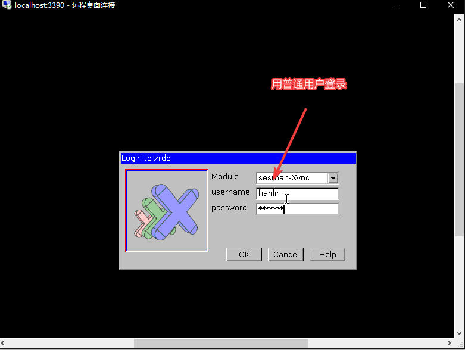

Wsl

本章主要介绍了在 Windows 系统下使用 Windows Subsystem for Linux 运行 Linux 环境的方法。
引言1¶
众所周知，尽管现在大部分学校的竞赛练习环境都是构建在 XP 等 Windows 系操作系统上，但是在 NOI 系列赛中，早已用上了 NOI Linux 这个 Ubuntu 操作系统的修改版。
NOI 竞赛（自 2021 年 9 月 1 日）的环境要求如下。2
| 类别 | 软件或模块 | 版本 | 备注说明 |
|---|---|---|---|
| 系统 | Linux 内核 | 5.4.0-42-generic |
64 位 x86 (AMD64) |
| 语言环境 | GCC（gcc 和 g++） |
9.3.0 |
C 和 C++ 编译器 |
| FPC | 3.0.4 |
Pascal 编译器 | |
| Python 2 | 2.7 |
非竞赛语言 | |
| Python 3 | 3.8 |
非竞赛语言 | |
| 调试工具 | GDB | 9.1 |
|
| DDD | 3.3.12 |
GDB 的 GUI 前端 | |
| 集成开发环境（IDE） | Code::Blocks | 20.03 |
C/C++ IDE |
| Lazarus | 2.0.6 |
Pascal IDE | |
| Geany | 1.36 |
C/C++/Pascal（轻量级）IDE | |
| 文本编辑工具 | Visual Studio Code | 1.54.3 |
|
| GNU Emacs | 26.3 |
||
| gedit | 3.36.2 |
||
| Vim | 8.1 |
||
| Joe | 4.6 |
||
| nano | 4.8 |
||
| Sublime Text | 3.2.2 |
||
| 其它软件 | Firefox | 79.0 |
浏览器 |
Midnight Commander (mc) |
4.8.24 |
文件管理器 | |
| xterm (uxterm) | 3.5.3 |
终端 | |
| Arbiter-local | 1.02 |
程序评测工具单机版 |
考场环境与一般环境会有一系列差异：
- 命令行上的操作和图形界面上的操作会有差异。
- Linux 和 Windows 的差异，如对于大小写的敏感性差异。
- 不同编译器的行为（MSVC 和 GCC）和不同版本的编译器（Windows 上和 Linux 上的 GCC，32 位和 64 位的 Linux GCC，GCC 7 和 GCC 8 等）的行为，如对变量初始化和对数组下标越界的处理会有差异。
- 不同评测系统（洛谷和 Arbiter）的超时检查和内存限制检查会有差异。
这有可能导致一系列的尴尬情况：
- 想用Ctrl+C复制，结果退出了程序。
- 平时 AC 的程序模板到了 Linux 上就 WA。
为了防止考场上出现此类尴尬情况，我们必须要提前熟悉 Linux 系统的操作方法。
虽然 NOI 的官网已经放出了 NOI Linux 的 ISO 镜像，虚拟机的配置较为麻烦。且由于 NOI Linux 默认自带图形界面，无法保证在低配系统上流畅运行。
Windows 10 在一周年更新时推出了 Linux 子系统（WSL），在 2020 年 5 月更新中升级到了 WSL 2。截至 2020 年 6 月 1 日，WSL 已支持安装 Ubuntu、openSUSE Leap、Kali、Debian 等主流 Linux 分发版。但 WSL 并不支持 NOI 评测用的 Arbiter。
什么是 Linux 子系统（WSL）
适用于 Linux 的 Windows 子系统（英语：Windows Subsystem for Linux，简称 WSL）是一个为在 Windows 10、Windows 11 与 Windows Server 2019 上能够原生运行 Linux 二进制可执行文件（ELF 格式）的兼容层。
WSL 可让开发人员按原样运行 GNU/Linux 环境 - 包括大多数命令行工具、实用工具和应用程序 - 且不会产生虚拟机开销。
WSL 仅在版本 1607 之后的 64 位版本的 Windows 10 中可用。它也可在 Windows Server 2019 中使用。
启用 WSL3¶
自动安装¶
Warning
本部分适用于 Windows 10 版本 2004 及更高版本（内部版本 19041 及更高版本）或 Windows 11。
如果你正在使用 2004 以下版本或你的电脑不支持虚拟化，请阅读下面的手动安装一节。
如果你正在使用 Windows 10 1607 以下版本的 Windows，你的系统不支持 WSL。
-
以管理员身份打开 Windows Powershell（右击 "开始" 按钮，选择 Windows PowerShell（管理员）或 Windows 终端（管理员）)
-
输入
wsl --install，并等待所有组件自动安装完成。期间你可能需要重启你的计算机来启用必要的 Windows 功能。 -
安装完成后，你可以在 "开始" 菜单或 Windows 终端的标签页中找到你安装的发行版。
-
接下来，请转到下面“配置分发版”一节完成其他设置。
手动安装4¶
Warning
下面介绍手动安装 WSL 的步骤。如果你已经完成了自动安装，请跳过此部分。
启用适用于 Linux 的 Windows 子系统¶
在安装适用于 WSL 的任何 Linux 分发版之前，必须在下述两种方法中选择一种，以确保启用“适用于 Linux 的 Windows 子系统”可选功能：
使用命令行：
-
以管理员身份打开 PowerShell 并运行：
1 2 3
Enable-WindowsOptionalFeature -Online -FeatureName Microsoft-Windows-Subsystem-Linux # 如果你只想要使用 WSL 1 请跳过此步骤 Enable-WindowsOptionalFeature -Online -FeatureName VirtualMachinePlatform -
出现提示时，重启计算机。
使用图形界面：

-
打开“控制面板”
-
访问“程序和功能”子菜单“打开或关闭 Windows 功能”
-
选择 "适用于 Linux 的 Windows 子系统" 与 "虚拟机平台"
-
点击确定
-
重启
安装内核更新包¶
如果你想要使用 WSL 1, 请跳过此步骤。
下载 适用于 x64 计算机的 WSL2 Linux 内核更新包 并安装。
设置 WSL 默认版本¶
绝大部分情况下，建议使用 WSL 2。 WSL 1 与 WSL 2 的区别，请见 比较 WSL 2 和 WSL 1
关于 systemd
WSL 1 完全不支持 systemd（这意味着一些需要 systemd 的功能无法实现或需要别的 hack），WSL 2 可以使用 genie。 此外，yuk7/arch-systemctl-alt 项目提供了一个在 WSL 1 与 2 都可用的 alternative script，但是它只具有部分兼容且只在 ArchWSL 进行了测试。
1 2 | |
安装 WSL 分发版¶

进入 Microsoft Store，搜索“Ubuntu”，然后选择“Ubuntu”，点击“安装”进行安装。也可打开 Ubuntu 的商店页面。
Warning
Microsoft Store 的 Ubuntu 随着 Ubuntu 的更新而更新，因此内容可能会有所改变。如果想获取稳定的 Ubuntu 长期支持版，可以在 Microsoft Store 安装 Ubuntu 的 LTS 版本。
配置分发版5¶
本章以 Windows 自动安装的 Ubuntu 为例。
运行 Ubuntu¶
打开“开始”菜单找到 Ubuntu 并启动，或使用 wsl 命令从 Windows 命令行启动。
可以为 Ubuntu 创建应用程序磁贴或固定至任务栏，以在下次方便地打开。
初始化¶
第一次运行 Ubuntu，需要完成初始化。
1 | |
等待一两分钟时间，系统会提示创建新的用户帐户。
1 2 3 | |
输入完用户名以后会提示输入密码。在 Linux 中，输入密码时屏幕上不显示文字属于正常现象。
1 | |
设置好帐户名和密码后，WSL 就安装完成了。
1 2 3 4 5 | |
基础配置¶
初次安装好的系统不附带任何 C/C++ 编译器，需要手动配置环境。
1 2 3 4 5 6 | |
更换为国内软件源¶
Ubuntu 默认的软件源在国外。可以换成国内的软件源以加快速度，如 清华 TUNA 的软件源。
使用与自己系统版本匹配的软件源
请在页面中寻找与自己系统版本相配的源（可使用 sudo lsb_release -a 查看 Ubuntu 版本）。
除非你知道你在做什么，否则不要使用与自己的系统版本不匹配的源！
使用以下命令更新软件和软件源：
1 2 3 4 5 | |
安装中文环境¶
1 2 3 4 5 6 7 | |
使用 sudo dpkg-reconfigure locales 进入菜单，按空格选择带 zh_CN 的选项（推荐 zh_CN.UTF-8 UTF-8），选完后回车。
1 2 3 4 5 6 7 8 9 | |
下一个菜单中选择 zh_CN.UTF-8 回车。
1 2 3 4 5 6 7 8 | |
之后关闭 WSL 并重启，系统就会变成中文。
再依次输入下列命令，把 man 帮助页替换为中文。6
1 2 | |
可以用 man help 测试。
安装编译环境7¶
1 | |
GUIDE 的安装请参考 Debian 或 Ubuntu 下 GUIDE 的安装。
这里安装的是基础 + NOI 官方要求的环境，如有需要可以用 apt install <程序名> 来安装其它软件包。
若想安装其他版本可以参考 Debian 官方的 包管理手册。
以下为一个示例程序：
1 2 3 4 5 | |
Note
Linux 环境下可执行文件可不带扩展名，实现方式看上方命令。
进阶操作¶
使用 WSLg 运行 GUI 程序¶
如果你使用 Windows 11 Build 22000 以上版本，则可以使用 WSL 2 提供的集成的桌面体验。该功能允许你直接安装并启动 Linux 桌面程序而无须其他配置。
参见 在适用于 Linux 的 Windows 子系统上运行 Linux GUI 应用（预览）
安装图形环境，并使用远程桌面连接¶
如果你使用的版本尚不支持 WSLg, 可以尝试使用以下指南开启图形界面功能。
以下以 Xfce 为例。
如果只想安装 Xfce，可以执行以下命令：
1 | |
如果除 Xfce 外想要更多的软件，可以执行以下命令：
1 | |
图形环境文件较大，下载解包需要一定时间。
配置 xrdp：
1 2 3 | |
为了防止和计算机本来带的远程桌面冲突，最好换一下端口。

运行命令 sudo sed 's/port=[0-9]{1,5}/port=otherport/' /etc/xrdp/xrdp.ini，其中 otherport 为其他端口（如 3390）。
1 2 3 | |
运行 sudo service xrdp restart，然后去开始菜单，用 localhost:otherport 来访问。


使用 Xming 连接¶
进入 Ubuntu 环境，安装 xterm：
1 | |
退出 Ubuntu。
从 Xming X Server 下载地址 下载最新的 Xming Server，然后安装：

如果安装完后忘记勾选 Launch Xming，需在开始菜单里打开 Xming：

之后再回到 Ubuntu，键入如下指令：
1 | |

如果使用了 xfce4，可以在弹出的窗口中使用如下命令激活 xfce4：
1 | |

运行结果如图。（在 Xming 中使用Ctrl+C就可以退出该界面。）

WSL 与 Windows 文件的互访问¶
Windows 下的硬盘被自动挂载至 Linux 环境下的 /mnt 文件夹下。
如 C 盘在 WSL 下的路径为 /mnt/c
1 2 3 4 5 6 7 8 9 | |
相对的，也可以从文件管理器访问 WSL 目录。在安装 WSL 后，可以在资源管理器的侧边栏中发现 Linux 项，在其中可以访问所有安装的发行版其中的文件。
同样，也可以在资源管理器的路径或运行（Win+R）中直接输入 \\wsl$ 来转到 WSL 的目录。
也可以直接使用诸如 \\wsl$\Ubuntu\home\ 的路径访问其子文件夹。
配合 Visual Sudio Code 进行编辑¶
如果习惯在 Windows 环境下使用 Visual Studio Code 进行代码编辑，可以安装 VSC 中的 Remote - WSL 插件，更方便地对 WSL 系统中的文件进行编辑。
通过 Remote - WSL，可以在 Windows 下的 VS Code 界面中直接对 WSL 子系统进行操作，更加方便地编辑子系统目录下的文件、更方便地使用终端进行调试。
通过在 WSL 中直接键入 code .，可以在该目录下直接唤出 Visual Studio Code，对于该目录下的文件进行编辑。
同时，可以通过类似 code filename 的命令，对于指定文件进行编辑。
在插件 Remote - WSL 的 Getting Started 页面，包含对于编辑操作的详细简介。
同时，也可以参考 Visual Studio Code 的官方文档中关于 WSL 的内容（Remote development in WSL），这篇文章包含从 WSL 安装到配合插件使用的全流程的更详细的介绍。
FAQ¶
参见：常见问题，WSL 2 常见问题解答
-
如何在子系统下进行 xxx？
可以用自带命令行，或者使用图形界面。 比如说 vim，在命令行中键入
man vim，会给出一份详尽的使用方法。 亦可使用vim --help。关于命令行，可阅读 命令行
-
对系统资源的占用量？
这个系统和 Windows 10 共用 Host，所以理论上是比虚拟机占用小的。
外部链接¶
- 关于适用于 Linux 的 Windows 子系统
- Ubuntu 镜像使用帮助，清华 TUNA
- Dev on Windows with WSL（在 Windows 上用 WSL 优雅开发）
- GitHub 上的 Awesome-WSL
- 排查适用于 Linux 的 Windows 子系统问题
参考资料与注释¶
build本页面最近更新：，更新历史
edit发现错误？想一起完善？ 在 GitHub 上编辑此页！
people本页面贡献者：Ir1d, H-J-Granger, NachtgeistW, StudyingFather, Enter-tainer, abc1763613206, Anti-Li, shenyouran, Chrogeek, SukkaW, Henry-ZHR, Early0v0, andylizf, tootal, Marcythm, CoelacanthusHex, indevn, qinyihao
copyright本页面的全部内容在 CC BY-SA 4.0 和 SATA 协议之条款下提供，附加条款亦可能应用